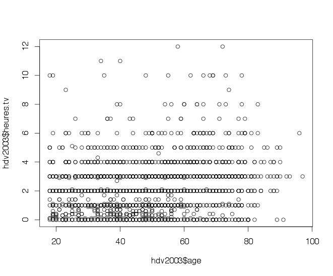
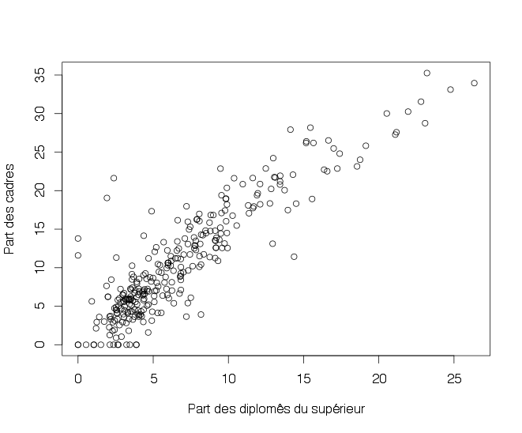
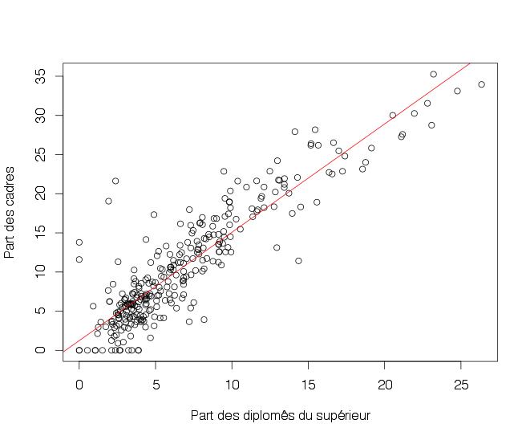
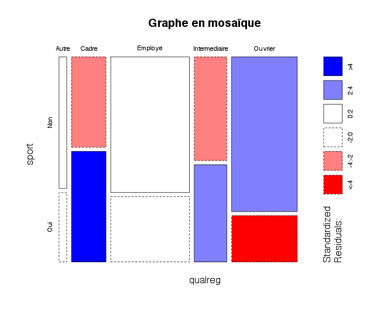

R Project for Statistical Computing
S03
Présentation par Etienne DELAY / @ElCep
Objectifs
- Rappels : Premier travail avec des données
- inspecter les données
- editer
- analyser une variables quanti
- analyser une variables quali
- Statistique bivariée
- Loops & fonctions
Rappels
Analyser une variables quantitative 1
mean(data.df$heures.tv)
[1] NA
mean(data.df$heures.tv, na.rm = TRUE)
[1] 2.246566
sd(data.df$heures.tv, na.rm = TRUE)
[1] 1.775853
min(data.df$heures.tv, na.rm = TRUE)
[1] 0
max(data.df$heures.tv, na.rm = TRUE)
[1] 12
range(data.df$heures.tv, na.rm = TRUE)
[1] 0 12
median(data.df$heures.tv, na.rm = TRUE)
[1] 2
R> summary(data.df$heures.tv)
Analyser une variables quantitative 2
hist(data.df$heures.tv, main = "Nombre d'heures passées devant la télé par jour",
xlab = "Heures", ylab = "Effectif")

Analyser une variables quantitative 3
boxplot(data.df$heures.tv, main = "Nombre d'heures passées devant la télé par jour",
ylab = "Heures")

Analyser une variables Qualitative 1
table(data.df$sexe)
table(data.df$occup)
sort(table(data.df$occup))
sort(table(data.df$occup), decreasing = TRUE)
summary(data.df$trav.satisf)
freq(data.df$qualif)
freq(data.df$qualif, cum = TRUE, total = TRUE,
+ sort = "inc", digits = 2, exclude = NA)
Summarizing data
library(plyr)
cdata <- ddply(data.df, c("sexe", "qualif"), summarise,
N = length(id),
meanAge = mean(age),
sdAge = sd(age),
meanPoids = mean(poids),
sdPoids = sd(poids)
)
Statistique bivariée
Deux variables Quanti
rechercher un correlation
On peut chercher une correlation graphiquement
plot(hdv2003$age, hdv2003$heures.tv)

rechercher un correlation
data(rp99)
plot(rp99$dipl.sup, rp99$cadres, ylab = "Part des cadres",
xlab = "Part des diplomês du supérieur")

rechercher un correlation
cor(rp99$dipl.sup, rp99$cadres)
reg <- lm(cadres ~ dipl.sup, data = rp99)
summary(reg)
##ajouter la courbe de regression
abline(reg, col = "red")

d'autres testes
#parametrique (loi norm)
par(mfrow = c(1, 2))
hist(hdv2003$age[hdv2003$hard.rock == "Oui"], main = "Hard rock", col = "red")
hist(hdv2003$age[hdv2003$hard.rock == "Non"], main = "Sans hard rock", col = "red")
t.test(hdv2003$age ~ hdv2003$hard.rock)
#non-parametrique
wilcox.test(hdv2003$age ~ hdv2003$hard.rock)
Statistique bivariée
Deux variables Quali
Tableau croisé
hdv2003$qualreg <- as.character(hdv2003$qualif)
hdv2003$qualreg[hdv2003$qualif %in% c("Ouvrier specialise", "Ouvrier qualifie")] <- "Ouvrier"
hdv2003$qualreg[hdv2003$qualif %in% c("Profession intermediaire", "Technicien")] <- "Intermediaire"
table(hdv2003$qualreg) #tableau à une variable
table(hdv2003$sport, hdv2003$qualreg) #tableau à deux variables
table(hdv2003$sport, hdv2003$cuisine, hdv2003$sexe)
##pour des %
tab <- table(hdv2003$sport, hdv2003$qualreg)
lprop(tab) #ligne
cprop(tab, digits = 2, percent = TRUE) #colonnes
Correlations ?
Chi 2
chisq.test(tab)#s'applique sur un tableau croise
fisher.test(table(hdv2003$sexe, hdv2003$cuisine))
un graph
mosaicplot(qualreg ~ sport, data = hdv2003, shade = TRUE,
main = "Graphe en mosaïque")

Loops & fonctions
Une boucle c'est quoi?
- for(){}
- while(){}
for
for(i in 1:10){
print(i)
}
print("on sort de la boucle")
while
i<-0
while (i<10){
print(i)
i<-i+1
}
print("on sort de la boucle")
écrire une fonction
Vous utilisez plusieur fois la même commande ? Besoin de factoriser du code !
mafonction <- function(var1){
if(is.numeric(var1)){
return(sum(var1))
}else{
return(print("j'ai besoin d'un chiffre"))
}
}
Bonus : redaction de documents
le packages "knitr"
Knitr
Créer des documents LaTeX, Markdown ou HTML, aussi facilement que prendre un café avec RStudio
Pour créer un doc, file -> New -> R markdown
Différents formats de fragment de code exemples
- Rnw utilise
<< and >>=et ce que l'on veut (LaTex ou Markdown) - Rmd utilise
```r ```(Markdown) - Rhtml
(HTML) - ...
```{r}
df <- data.frame(x=1:10)
```
Le résultat d'une variable en ligne `r max(df$x)`
Le résultat d'une variable en ligne 10
Merci de votre attention


Vous pouvez retrouver cette présentation sur GitHub : http://unil.im/hOUnL
Présentation réalisée avec reveal.js Contenu largement inspirer de "Introduction à R" par Julien Barnier Crédit photo : Thomas Misnyovszki on Flick'r